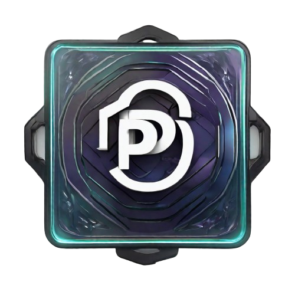

¿Qué son los algoritmos?
Un algoritmo es un conjunto ordenado de pasos definidos y finitos que se utilizan para resolver un problema o realizar una tarea específica. Los algoritmos son la base de la programación y la informática en general. Pueden ser simples o complejos, pero todos siguen un conjunto de reglas para producir un resultado deseado.

ProtoCool OS
0
Conozcamos un poco más acerca de los algoritmos
Ventajas de usar algoritmos
test
test
test
test
Copyright 2024, ProtoCool OS